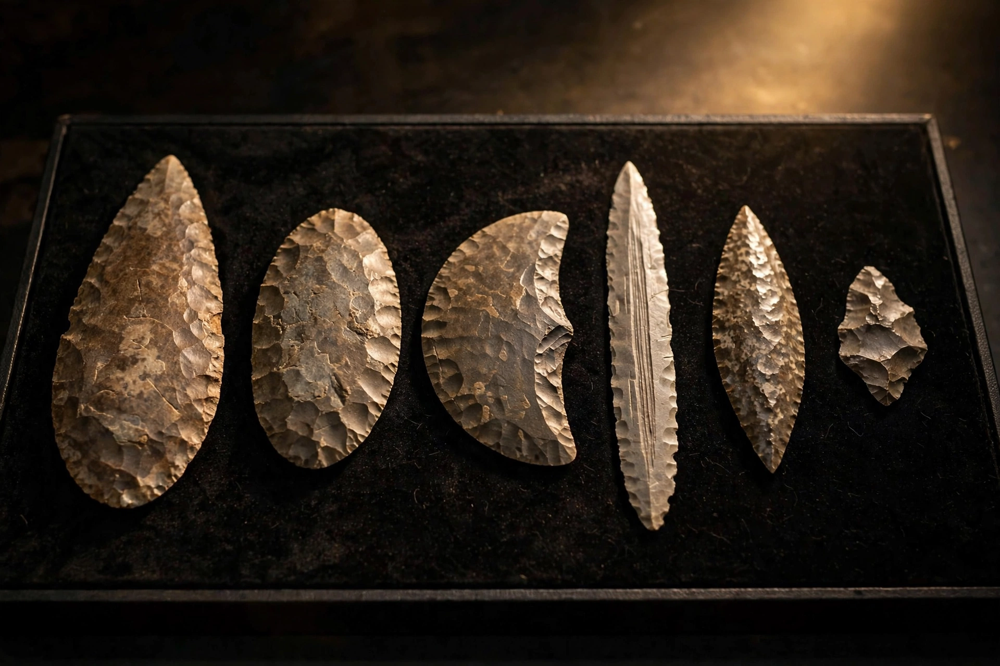

Stone Age

[Image: Photograph of flint handaxes and other knapped stone tools arranged on a museum tray]
The Stone Age was a broad prehistoric period during which stone was widely used to make tools and weapons with an edge, point or percussion surface. It is conventionally divided into the Palaeolithic (Old Stone Age), Mesolithic (Middle) and Neolithic (New Stone Age), and it ended, at different times in different regions, with the adoption of metalworking.
Palaeolithic
The Palaeolithic spans from the earliest known stone tools, about 3.3 million years ago, through the last Ice Age. Hominins developed handaxes, blades and specialised tools, controlled fire, made cave art, and — as anatomically modern humans spread worldwide — developed language, burial and ornament.
Neolithic
The Neolithic, beginning around 10,000 BC in southwest Asia, saw the Neolithic Revolution: farming, domesticated animals, settled villages, pottery and polished stone tools. Agriculture spread over millennia to most of the world, laying foundations for towns, states and writing.